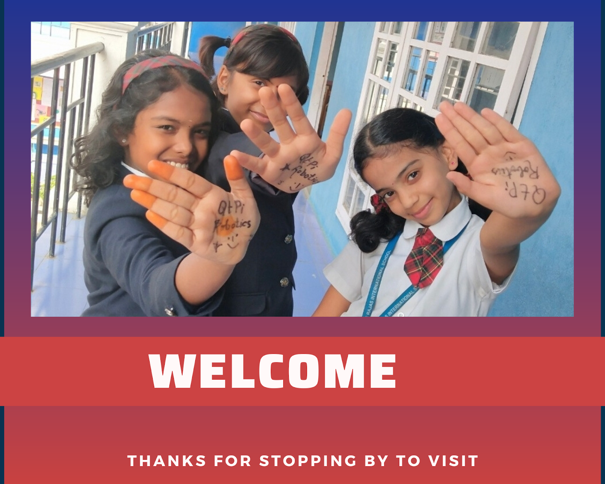
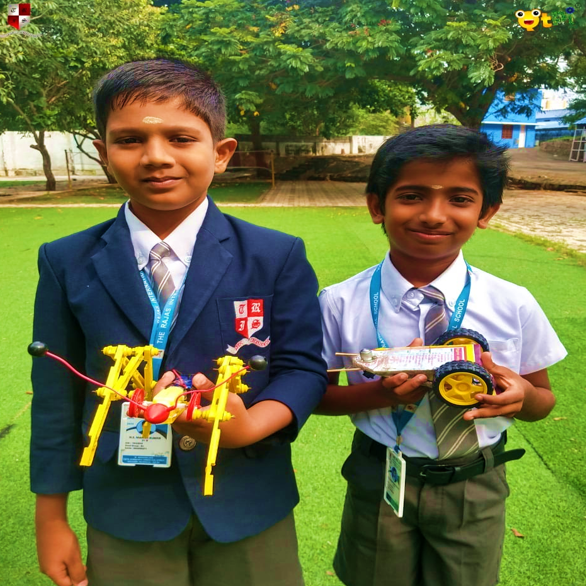
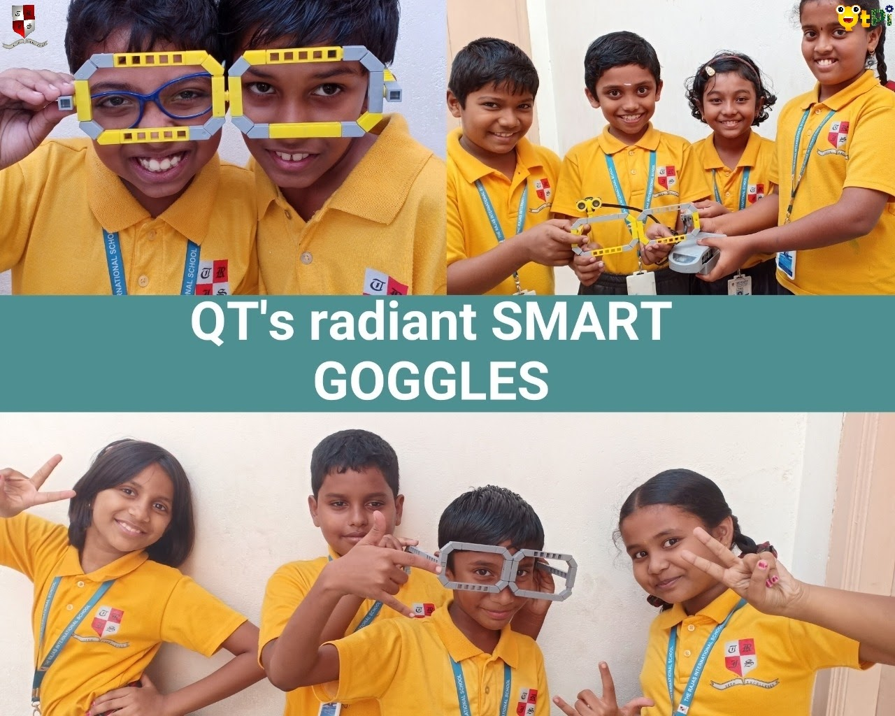
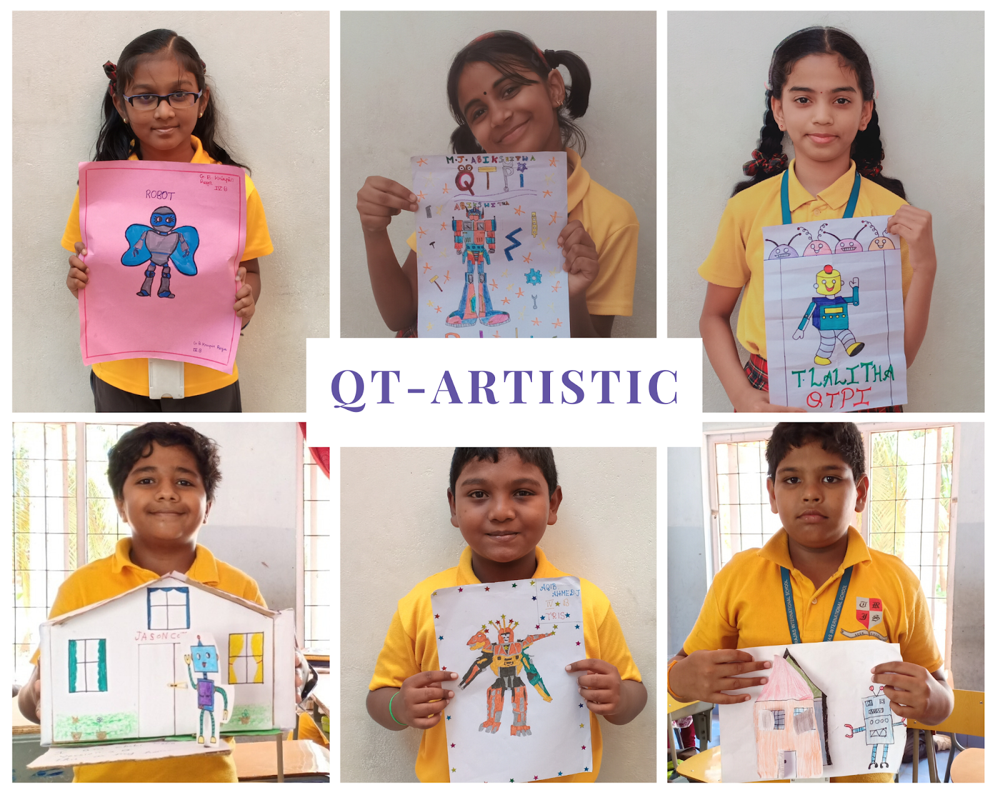
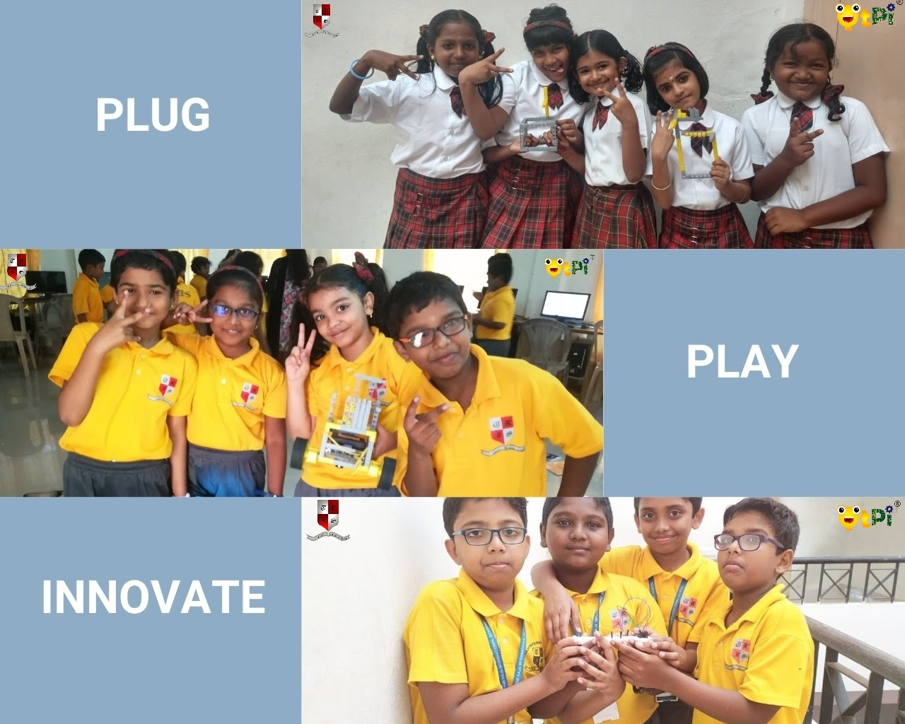
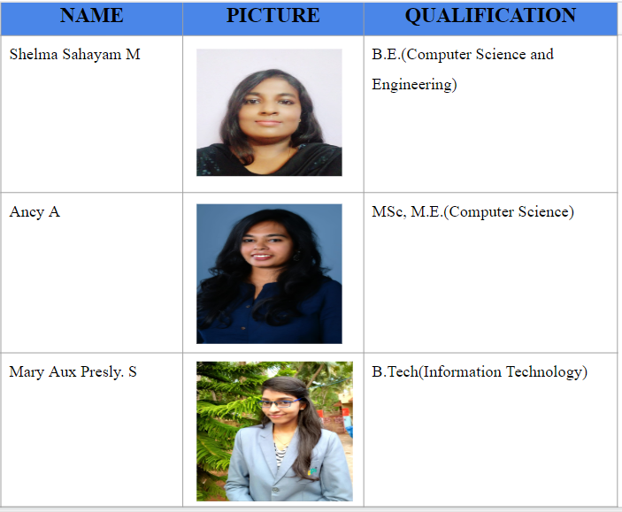

QtPi was established in 2016 and since then it has collaborated with 40+ schools, providing training in Robotics and STEAM. QtPi has achieved significant results across the schools it is collaborating with by providing not just theoretical knowledge but also by providing practical and hands-on experience with the kit provided by it. In 2018, QtPi had stepped in Nagercoil by collaborating with one of the prestigious schools, The Rajas International School.
- Vision : "Our vision is to make children think innovatively and come up with various solutions to the day-to-day problems using technology and Robotics, Inherit the knowledge and apply it in various fields and come up with distinct and innovative ideas to improve the quality of life and for the betterment of society in a sustainable way".
- Mission: "To introduce emerging technologies in Robotics and make students come up with their own ideas and projects based on their learnings, promote e-learning pedagogy and lead the teachers and students towards a better teaching learning process."
- Moto: "Our motto is "Take on the world!!" As we always encourage our students to dream big, we wish to instil the quality of aiming high in our children's minds."
To Know about [QtPi Robotics] (https://www.qtpi.in/)
- Two students were shortlisted for the District Level of INSPIRE Awards - MANAK (Million Minds Augmenting National Aspirations and Knowledge), being executed by DST with National Innovation Foundation – India guided by QtPi trainers.
- The objective of the scheme is to target one million original ideas/innovations rooted in science and societal applications to foster a culture of creativity and innovative thinking among school children.
- Ajay Jegan, from grade 9 and Ganesh from grade 6, were shortlisted for District Level and bagged 10,000 rupees cash prize.


.


Science Expo was conducted on November 10, of 2018.Students actively exhibited projects , being creative and skilled in their own way. The purpose of the exhibition was to bring out new ideas, magnify their skills and enhance imagination.
There are a lot of Inventions in various fields. In Agriculture , the Farmer's Assistant helps to automate, sensing moisture content in the soil and pump water based on moisture .Efficiency and making work easy are the highlights of this robot.

Yet another project exhibited was Home Automation with Voice control, where students automated Fans, Lights and Doors.

Students were encouraged to make DIY Projects from material and components used everyday as a part of their vacation projects.
Manish Kumar and Manishvar of Grade IV came up with an Ant-bot and a car

Children never stop themselves imaginating alone. They compose imagination to reality . Turning imagination into child's play- Smart Goggles.

A Glimpse on Art Work , following their Flight of Fancy on Robots.

Mastering the art of robotics has always been considered far from being a child's play. But proving the notion wrong, students explore, experiment on creating robots.



Student's "RADAR" Project was yet another achievement of this academic year 2019-2020.
The students who were active on the RADAR project were:
Gifcy ,Angelin and Johana of Grade 6
Rajalekshmi of Grade 8
Children of Grade 4, along with their brilliant DIY projects,
In addition, children achieved to design, program and work on BasketBall Counter which is indeed a radiant project.
Besides learning automation, children go an extra mile to know stuffs related .
Feedback of grade 6&7 students
Feedback of grade 4 student


THE RAJAS INTERNATIONAL SCHOOL
 The Rajas International School, Ozhuginasery
The Rajas International School, Ozhuginasery
Nagercoil- 629001 Kanyakumari Dist. Tamil Nadu.
Office : 04652-276365, 277087
Email: principal@tris.in . info@tris.in
Web: http://www.tris.in/
|
|